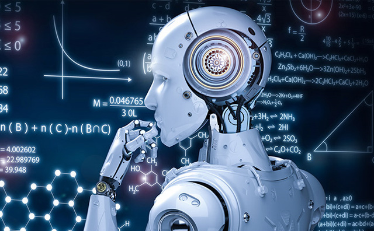

Defination
Artificial Intelligence refers to the intelligence of machines. This is in contrast to the natural intelligence of humans and animals. With Artificial Intelligence, machines perform functions such as learning, planning, reasoning and problem-solving. Most noteworthy, Artificial Intelligence is the simulation of human intelligence by machines. It is probably the fastest-growing development in the World of technology and innovation. Furthermore, many experts believe AI could solve major challenges and crisis situations
<>
click here to go to third page